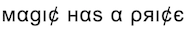

<!-- Codes by HTMLcodes.ws -->
<html>
</img>
<marquee behavior="scroll" direction="left">
    <h3>Victor Waters owns lots of Magic the Gathering cards ... Kinsbaile Cavalier, Morningtide @ $11.05 |+4.23%| - Jace, Magic Origins @ $45.94 |+2.99%| - Muraganda Petroglyphs, Future Sight @ $6.49 |+2.30%| - Bloodstained Mire, Khans of Tarkir @ $20.98
        |+1.99%| - Misty Rainforest, Zendikar @ $60.96 |+1.76%| Liliana, Eldritch Moon @ $50.0 |-6.49%| - Monastery Mentor, Fate Reforged @ $23.99 |-4.39%| Sliver Legion, Future Sight @ $81.82 |-4.16%| - Knight Exemplar, M11 @ $11.65 |-3.30%| - Urza,
        Modern Horizons @ $39.17 |-3.22%| - Thassa, Theros @ $19.48 |+9.23%| - Thoughtseize, Lorwyn @ $40.97 |+9.19%| - Academy Ruins, Time Spiral @ $27.97 |+8.48%| - Jace, Magic Origins @ $45.94 |+8.16%| - Liliana, Eldritch Moon @ $50.0 |+7.53%| - Oko,
        Throne of Eldraine @ $39.98 |-8.75%| - Liliana of the Veil, Innistrad @ $65.17 |-7.83%| - Rhys the Redeemed, Shadowmoor @ $25.94 |-5.04%| - Mox Opal, Scars of Mirrodin @ $104.99 |-5.00%| - Urza, Modern Horizons @ $39.17 |-4.73%|
    </h3>
</marquee>

</html>